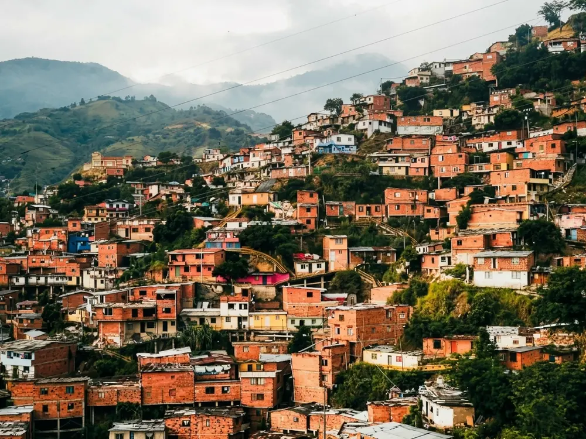
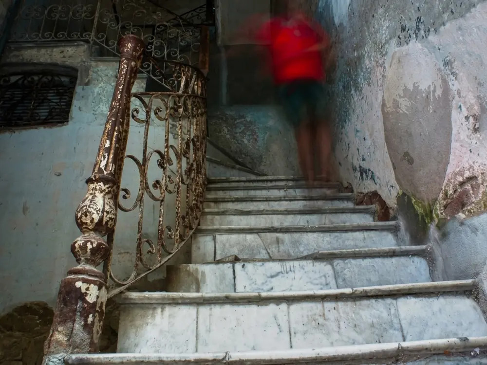
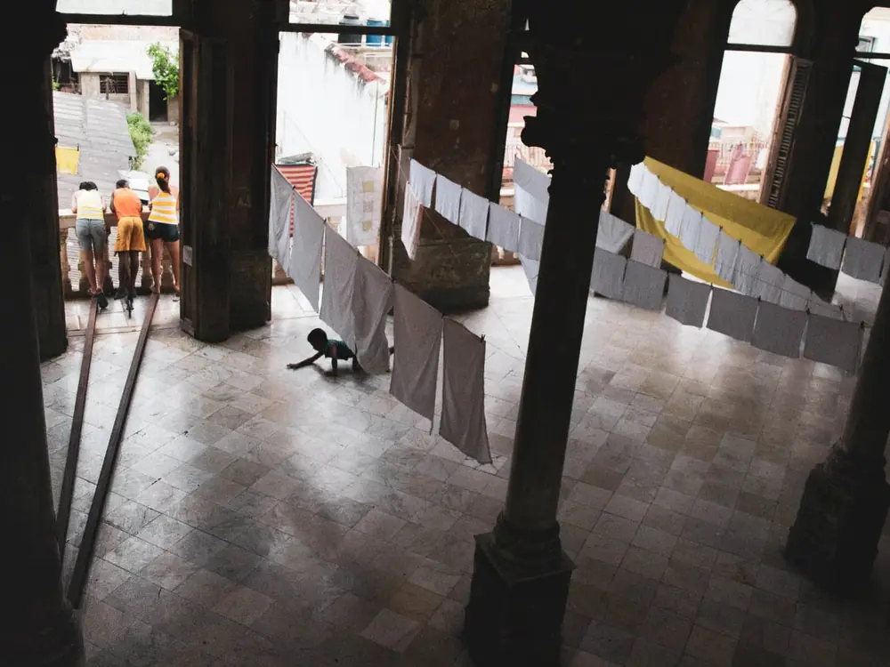
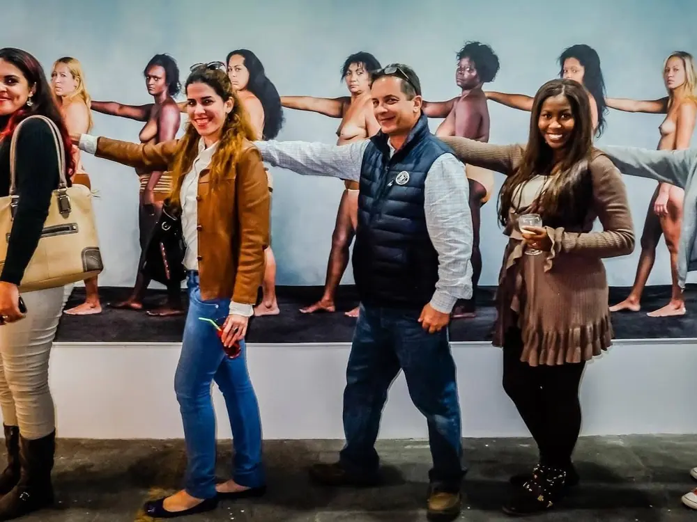
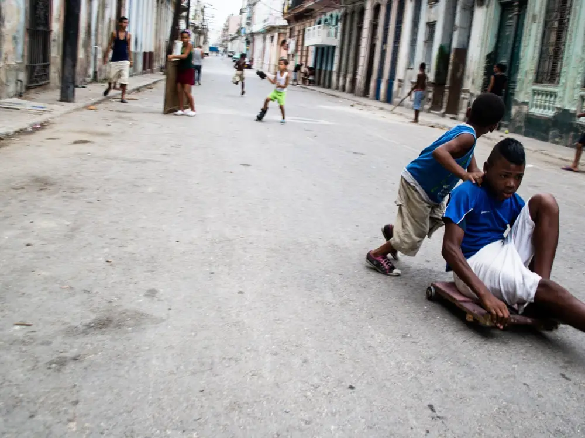

Una foto y su historia.
Soy Sergio Lubezky, fotógrafo. Llevo muchos años con una cámara en la mano y, con el tiempo, entendí que lo que más me importa de una foto no es lo que muestra, sino lo que me hizo sentir y lo que aprendí al hacerla.
Aquí cuento esas historias: una foto y lo que pasó antes y después del clic. Una playa en San Diego, una escalera en Centro Habana, un pescador en Trinidad, un museo en Medellín. Escenas pequeñas que me enseñaron cosas grandes.
No es un curso ni un portafolio. Es mi manera de explicar por qué la fotografía es lo mío, y una invitación a mirar con más calma. Entra a la historia que te llame la atención, o recorre el índice por temas.

Sin comparar
Caicedo La Sierra, Medellín, Colombia
Un buen pescador
Playa Ancón, Trinidad, Cuba
Pequeños destellos
San Diego, California, EE. UU.El cristal con que miras
Ciudad de México, México
Mensajes
Centro Habana, La Habana, Cuba
Tres ventanas al mar
Barra Galindo, Tuxpan, Veracruz, México
Sin el ruido del color
Regla, La Habana, Cuba
¿Qué ven ellas?
Vedado, La Habana, CubaOtra vez el anzuelo
San Andrés, San Andrés y Providencia, ColombiaMi museo favorito
Ciudad del Río, Medellín, Colombia/imagine
Ciudad de México, México
Ellas
Fábrica de Arte, La Habana, Cuba
Lo básico
Centro Habana, La Habana, CubaUna ventana al paraíso
Cartagena, Colombia
¿Tienes ganas de aprender foto?
Si quieres empezar en la fotografía, doy clases individuales. Si ya fotografías y buscas una mirada propia, te acompaño con coaching y viajes fotográficos.